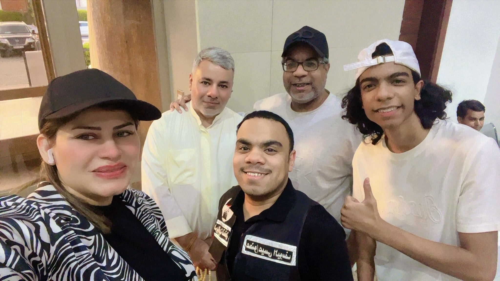
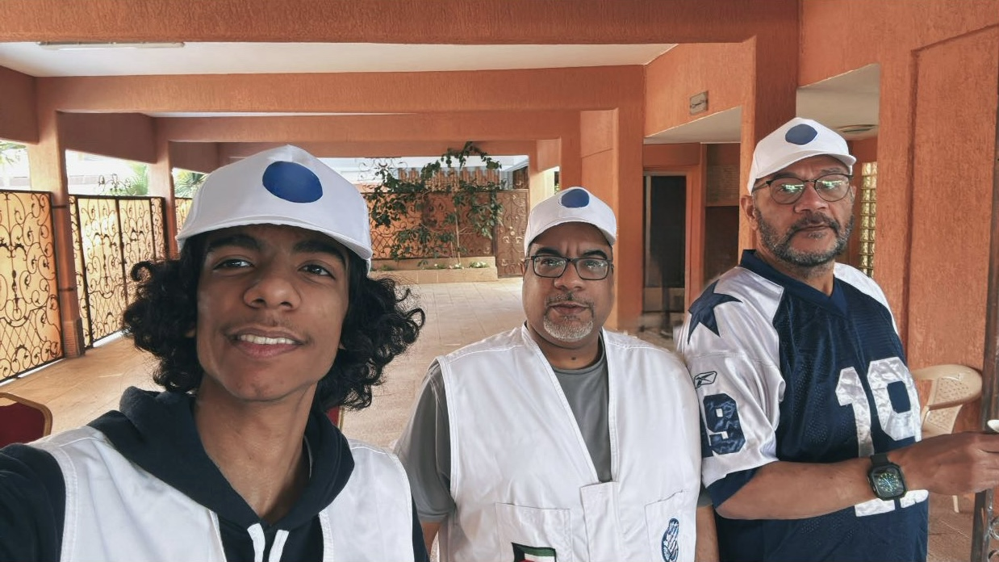
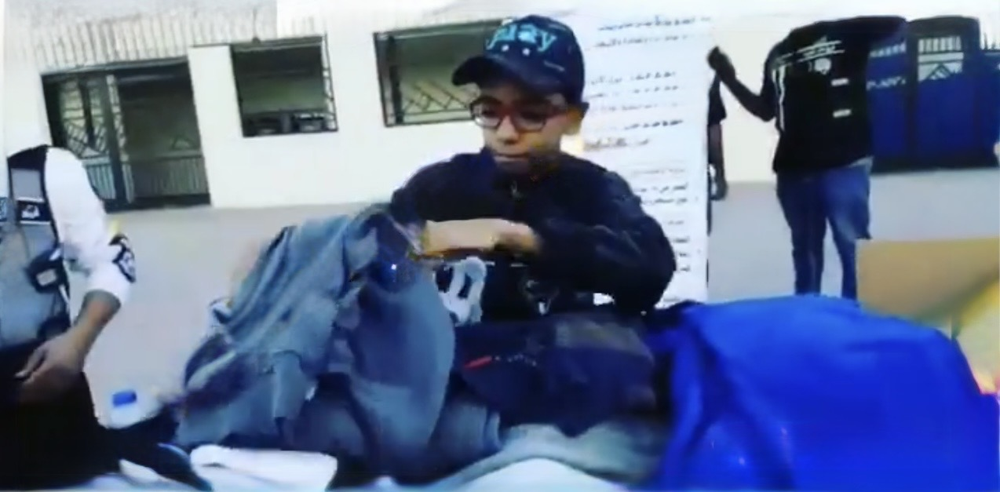
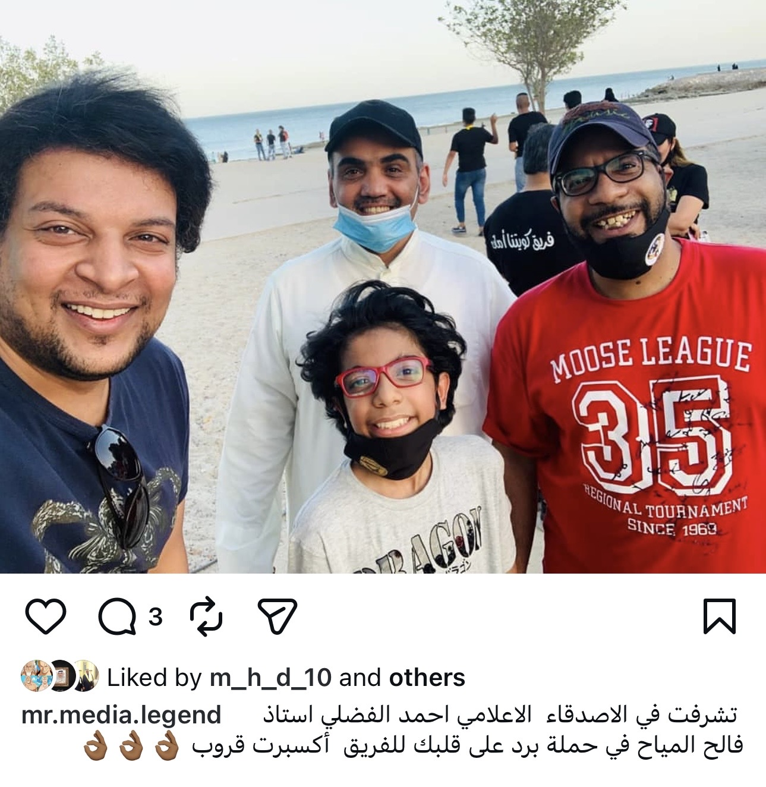
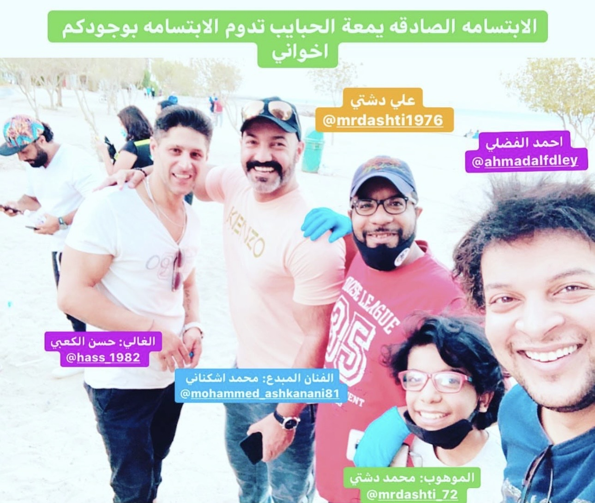
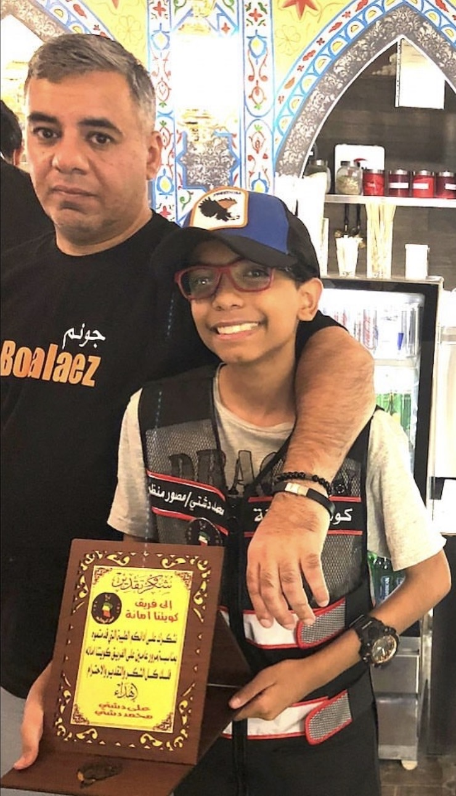
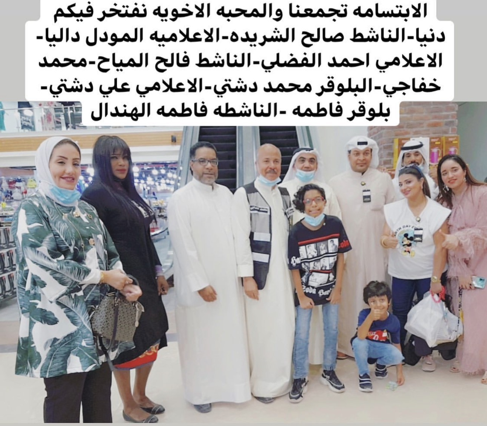

محمد علي دشتي
مجالات العمل الإبداعي
التصوير الاحترافي
الإعلام الميداني
تغطية الفعاليات
صناعة المحتوى الرقمي
الألبوم الوثائقي للمسيرة التطوعية
فريق الكويت تستحق العضوية الحالية
المشاركة الفعالة في تنظيم المبادرات المجتمعية والوطنية والإنسانية الفاخرة تحت قيادة الوالد (قائد الفريق).

🩸 حملة التبرع بالدم
جانب من مشاركتي وتنظيمي الميداني في حملة التبرع بالدم الإنسانية الكبرى مع فريق الكويت تستحق الوطني.
5/6/2026
🌙 مشاركة رسمية مع الهلال الأحمر
تشرفت بالتواجد والعمل الإنساني والمشاركة مع الوالد الإعلامي القدير علي دشتي والناشط حسن بوصالح في المبادرة.
28/2/2026فريق فخر الكويت سابق
عضو مساهم فعال في تقديم الأنشطة التطوعية والخدمات المجتمعية والخيرية الفورية للأسر المتعففة داخل الكويت.

📦 حملة خيرنا لأهلنا الرابعة
توثيق لمشاركتي الميدانية مع أبطال فريق فخر الكويت في حملة توزيع الملابس والمواد الغذائية المتكاملة للأسر المتعففة في منطقة الجليب.
مبادرات إعلامية مجتمعية أرشيف
التغطيات الميدانية الاستثنائية والعمل المجتمعي خلال الأزمات الكبرى والمبادرات الإنسانية الخاصة.

🍦 حملة برد على قلبك - أكسبرت قروب
تشرفت بالتواجد الفعال والتوثيق مع الأصدقاء؛ الإعلامي أحمد الفضلي والاستاذ فالح المياح في المبادرة الوطنية المباركة أيام جائحة كورونا.
29/6/2020
✨ لقطة تجمع نجوم الفن والإعلام
صورة تذكارية فخمة تجمعني مع الإخوان الإعلامي أحمد الفضلي (بودشتي)، الوالد علي دشتي، الفنان محمد أشكناني، والفنان حسن الكعبي.
فريق كويتنا أمانة سابق
محطات بدايات العطاء العمل التطوعي والمشاركة الفعالة في الحملات التوعوية والوطنية الميدانية المختلفة.

🏆 تكريم وتقدير بمرور عامين
لحظة تكريمي الغالية من فريق كويتنا أمانة بمناسبة مرور عامين كاملين من العطاء وتأسيس الفريق، كل الشكر لأخونا البلوقر المتميز عبدالعزيز الفيلكاوي.

إلهام ونصيحة اليوم
جاري جلب حكمة اليوم المخصصة للإعلام وصناع المحتوى والعمل الوطني والتطوعي...